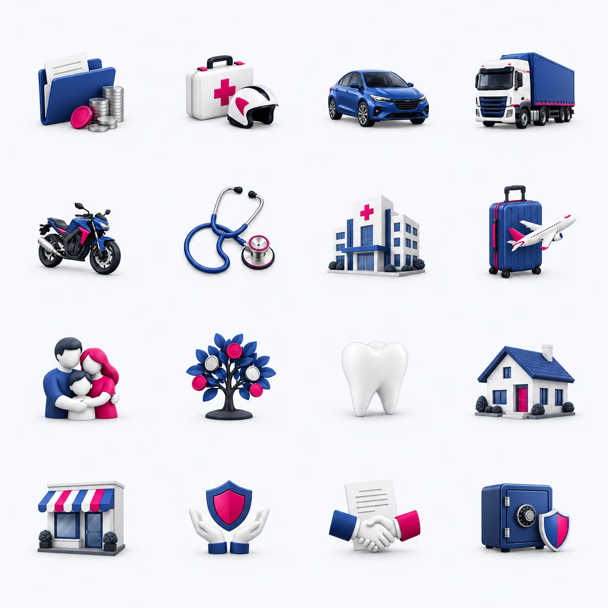
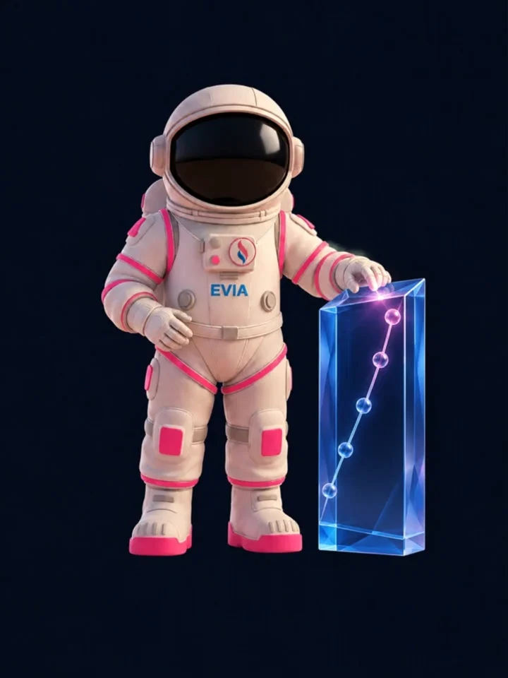
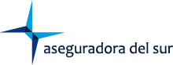
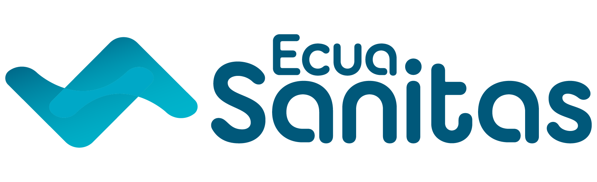
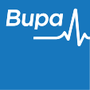
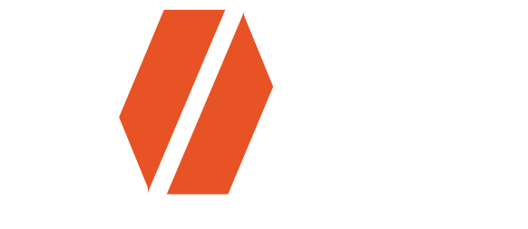
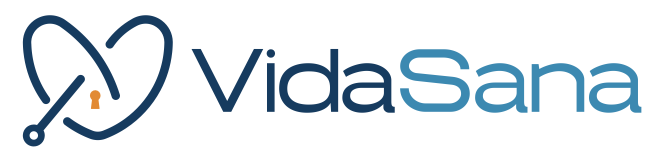
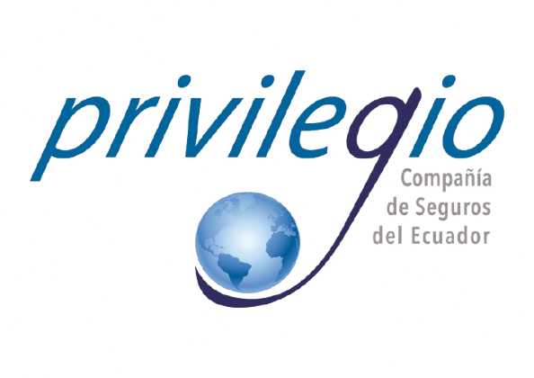
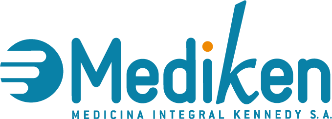
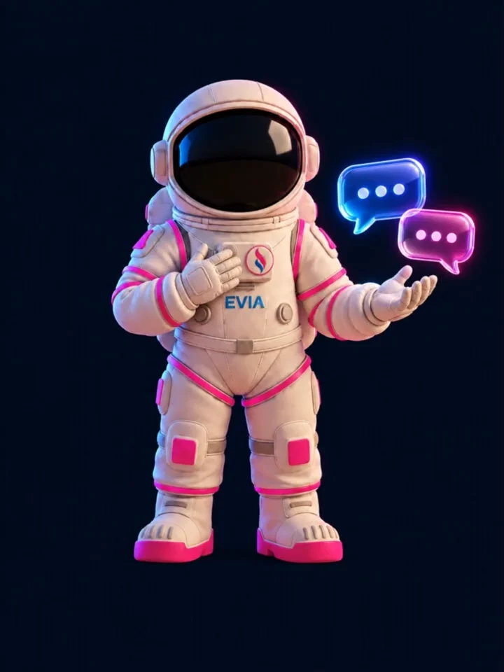

5 años
Construyendo la historia de Efy Seguros
Protección que evoluciona contigo
Protege lo que más importa.
Encuentra tu seguro con asesoría cercana.
Una elección muy tuya

Para cada nuevo camino.
Solicitar cotizaciónTu bienestar, más cerca.
Solicitar cotizaciónPor quienes más quieres.
Solicitar cotizaciónDonde empieza tu historia.
Solicitar cotizaciónLo que estás construyendo.
Solicitar cotizaciónProtección para personas, familias y empresas.
Explorar nuestros segurosCuando más lo necesitas
Estamos contigo para dar el siguiente paso.
Iniciar reportePrepara tu consulta para el equipo de Efy.
Consultar reembolsoEncuentra el canal para consultar por tu caso.
Consultar siniestroConsulta el registro de tu seguro de cooperativa.
Consultar cobertura
Conócenos
En Efy Seguros creemos que proteger va mucho más allá de contratar una póliza. Se trata de brindar tranquilidad, construir relaciones de confianza y estar presentes cuando nuestros clientes más nos necesitan.
5 años
Construyendo la historia de Efy Seguros
+15 años
De experiencia en el mercado asegurador
Aliados estratégicos
 Chubb
Chubb
Aseguradora del SurZurichSeguros Unidos MAPFRESeguros Atlántida
MAPFRESeguros Atlántida
EcuasanitasSaludsaHumanaBMISeguros AlianzaSeguros del PichinchaInteroceánicaGeneraliEquisuiza
BupaAssist CardHispanaLatina SegurosAIG
VAZ Seguros
VidaSanaConfiamed
Privilegio
MedikenReseñas
Cada conversación nos ayuda a acompañarte mejor.
Conoce nuestro espacio de reseñas
Contáctanos
Elige el equipo que necesitas o visítanos en Quito.
Comercial
Información sobre servicios y consultas comerciales.
Conversar por WhatsAppOperativo
Consultas sobre trámites y gestión de tu seguro.
Conversar por WhatsAppTambién por correo
Ayuda
Resuelve dudas sobre coberturas, deducibles, renovaciones y documentos de reembolso. Ir al centro de ayuda →
Cuéntanos qué ocurrió y en qué apartado. Reportar un error →